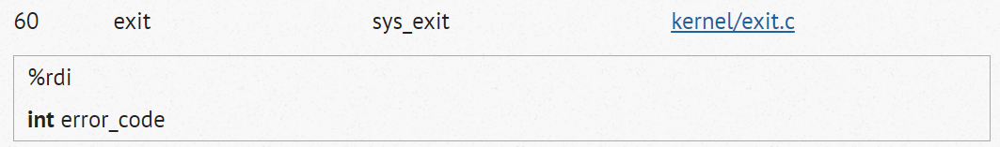
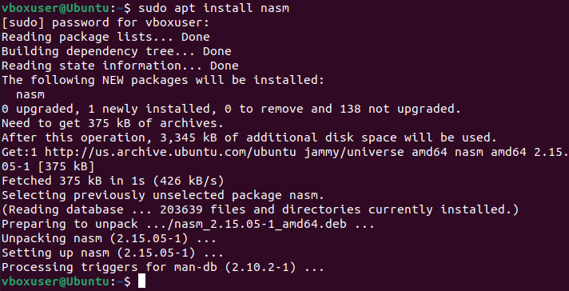
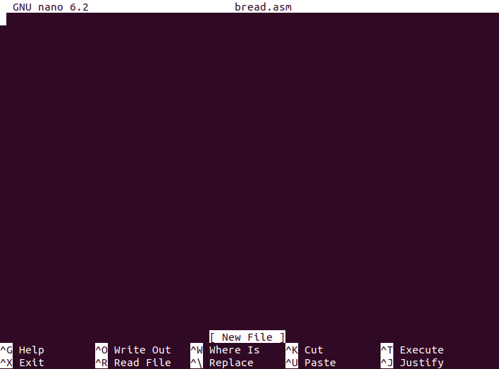
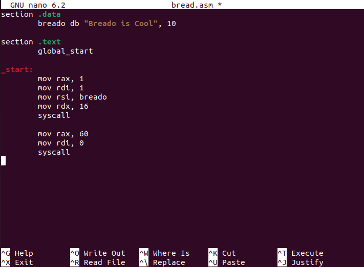
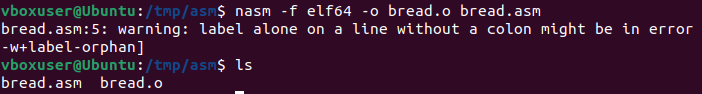
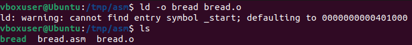
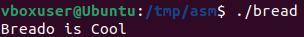

Introduction to Assembly

Learn Assembly With Breado
By: Breado
Introducing You to the Hardest Language Ever
Before we start - what is assembly??Assembly Language (short: Assembly or ASM) is the language that operates the closest to the CPU. The CPU is the component of your PC that executes instructions. You can literally call it the brain of the computer.
As many of you guys know, compiled languages like C are very fast, like really really fast! That's the case because C is practically just one stage above ASM (I will call Assembly ASM from now on, for simplicity). Since C operates near the CPU too, it's really fast. There's something way faster than C, and you might already know it: ASM.
ASM is only one stage above binary, and is really hard to learn, especially for new programmers. ASM is worth it though, since you will aquire a deep understanding of how the CPU works, how programs get compiled, etc. C is actually compiled into assembly, which then gives the instructions to the CPU. Every language you ever wrote Hello World in was compiled into Assembly.
Enough Theory, let's hop right into the coding, shall we?
Understanding Assembly
Here you will see some ASM code, don't feel overwhelmed, I will explain everything in excrutiating detai:section .data
bread db "Breado is Cool", 10
section .text
global _start
_start:
mov rax, 1
mov rdi, 1
mov rsi, bread
mov rdx, 16
syscall
mov rax, 60
mov rdi, 0
syscallOkay, let's look at the first line, shall we?
section .dataSections
In ASM you will find multiple sections. The lines indented under each section belong to it. In the .data section you can declare and initialize variables. If you're not familar with these two words here's an explanation:Declaration: Creating a variable, you do that by giving it a name and defining its type.
Initialization: you assign a value to that variable.
If you aren't familiar with what variables are you should definitely look at some other coding tutorials first.
.data section
The .data section is a bit special. Every variable, array, etc you declare here is static. That means, that its value cannot change throughout the program, under no circumstances. If you try to reuse that variable somewhere else in the code and trying to change it value, it'll raise an error.Now we'll look at the second line of code:
bread db "Breado is Cool", 10If you are familiar with programming already, you will kinda recognize this syntax, You have a variable name, in this case bread. Then you have a string being assigned to that variable. Pretty ez right? But what is ”db”, and why is there a 10 at the end?
The “db” stands for “define byte”. If you don't know what a byte is, you should stop right here and look that up! It will be pretty important later on!
Now, db is what we call a directive. They are incredibly important for the code, since they tell the Assembler what datatypes are in the variables and what to do with them, and you have to tell him that specifically. If you don't, unimaginable things of horror will happen (aka it may lead to unexpected behaviour, which we don't want ofc).
So, if you use db, you are telling the assembler that you want to store Characters in Unicode or ASCII. So it just tells him: Ah, text!
And now, what is the 10 at the end?
We firstly need to look at the comma there, it's extremely important. A comma is used to pass something into whats to the left of it (so before it). We really need that, since the 10 is the hexadecimal value of the newline character.
The newline character is responsible for "hitting the enter key for you" after your text is displayed. Programs don't do newlines by default. You either have to output a new line of text or use a newline character, which is normally "\n". But the thing is, ASM doesn't have that. Since ASM doesn't support using newline characters in strings, we'll just go and append the hexdecimal value to the stuff in the bread variable, which is “Breado is cool”. So it becomes “Breado is Cool\n” which is what we need.
.text section
Okay, so let's move to the next 2 lines:section .text
global _start
There we have it again: section. But this time with another section called text. This section represents the “main program”. The Code inside that section gets executed by the CPU. This code is read only, which means it cannot be changed at runtime (normally). Now, I really don't know why you would call this section text?? Like, it is the main part of the program, why not just calling it main? But it is what it is, so we'll have to stick with text.
We also have a new thing called global _start.
global _start initializes the program. It's the starting point from where the CPU begins to execute anything that comes after this. The underscore before the label name is a convention used in many assembly languages to indicate that it is a globally visible symbol. In other words, other parts of the program (or even other programs) can refer to the _start label by name, since it is defined as global. The _start label is typically used in programs that are designed to run directly on the operating system, without the help of a higher-level language like C. Theres not really much to know about it, that's basically what it does.
Instructions
Okay, now let's get into the real stuff!_start:
mov rax, 1
mov rdi, 1
mov rsi, bread
mov rdx, 16
syscall
mov rax, 60
mov rdi, 0
syscall
_start: Already got explained by me. It starts the program.
Ill explain the rest as good as I can:
Registers
Do you know how you have a place in your brain where you remember things that are important to you, like your favorite food or what you had for breakfast this morning? Well, in a computer, there are also special places where it stores important information that it needs to do its job. These special places are called "registers."Registers are like small storage spaces that can hold tiny pieces of information, like numbers or letters. The computer can use these registers to do math, compare things, and move information from one place to another really quickly. (That's what the mov instruction is for, moving info between these registers)
Just like how you might use your memory to remember important things for a short period of time, registers also only remember information for a short time. After the computer is done using the information in a register, it can be cleared out to make room for new information. So, in summary, registers are special places in a CPU where it stores important information for a short period of time. Just like how you use your own memory to remember important things for a little while.
SYSCALLs
SYSCALLs are used when you want to initiate an action with the kernel. A kernel is the software running your operating system (OS).SYSCALLs are called in different ways depending on what OS you are using. I'm using Linux running on 64bit x86 and uses "syscall" in the assembly code.
List of Most Common Arguments and Registers
| ID | SYSCALL Name |
|---|---|
| 0 | sys_read |
| 1 | sys_write |
| 2 | sys_open |
| 3 | sys_close |
| 4 | sys_newstat |
| 5 | sys_newfstat |
| Register Name |
|---|
| rax (syscall ID) |
| rdi |
| rsi |
| rdx |
| r8 |
| r9 |
The ID represents the ID of the SYSCALL (the number of the SYSCALLs in the table I link at the bottom of the article). SYSCALLs mostly takes aruments (aka extra info that you give it), so the kernel and CPU can do their job correctly.
Implementing SYSCALLs
The SYSCALL sys_write for example has an ID of 1. So if we want to use sys_write we must call it by first moving its ID to the rax register:mov rax, 1To go further we have to look at the tables with their corresponding arguments, which we can insert. In sys_write the argument "1" is "standard output", which issimilar to C with STDOUT. So if we want to call this argument we have to move 1 to the rdi register:
mov rdi, 1The 3rd argument is the buffer, so what the memory should have in the first place. I have created a variable with a string at the beginning:
bread db "Breado is Cool", 10bread is the variable name, db stands for the data type and 10 adds a newline character. So if we want to have bread in the buffer, we take bread, and put it in rsi.
mov rsi, breadThe next argument is "count”. “count” contains only the number of bytes it should write. Each letter is a byte (whitepsaces too). So we count the letters in “bread”. 15 letters + newline char (because of the 10 we used) so we move 16 to rdx:
mov rdx, 16In the end our SYSCALL should look like this:
mov rax, 1 # Move sys_write ID (1) to rax
mov rdi, 1 # Move 1 to rdi to route our output to STDOUT
mov rsi, bread # Move the char buffer containing our string to rsi
mov rdx, 16 # Move 16 to rdx to choose the number of bytes we want to write to STDOUT
syscall # Execute our SYSCALL
After this portion of our ASM code gets executed, we should see the string in our buffer being printed out to STDOUT.
Now were almost at the End! We only need to close the program, and then compile it into an executable, and that's it!
So the last part comes now:
mov rax, 60
mov rdi, 0
syscall
If you still remember, rax will contain the ID of the SYSCALL we want to make. So we can see, that a SYSCALL with the ID 60 has been moved to rax. Looking at the link at the bottom of this article, in the table, scrolling down to 60, we can see, that something with the name “sys_exit” is getting called.
Obviously this is exitting the script. We're specifying the SYSCALL made, and then passing the argument in the next step into it. If we double click on the element in the table, we can exactly see which argument it takes: int error_code.
 https://filippo.io/linux-syscall-table
Int is saying that it has to be an integer we put in rdi and error_code is pretty easy to explain. You can exit the script with an error code, if you pass a number higher than 0 into rdi. This makes sense, since compilers always return 0 if the code ran without errors. Since were passing 0, the script will run without any problems.
Writing Assembly Code
Now let's write and run our first ASM program in Linux:1. Open your terminal and enter: sudo apt install nasm
NASM is the compiler for the Assembly code we will use.

2. Enter: nano bread.asm
If it tells you there isnt a command named nano, you'll have to install it by entering: sudo apt install nano

3. Paste the assembly code I gave you at the very beginning of this article.

4. Press Ctrl + X to exit nano.
5. Type “Y” for Yes (since you want to save the file ofc) and hit enter to save the file as "bread.asm".
6. Type the following into your terminal to create an object file: nasm -f elf64 -o bread.o bread.asm
-f tells the compiler which binary format to output
-o tells the compiler what the filename should be
You can edit this, just remember to keep .o as the extension, since we're outputting an object file

7. Create a binary using your object file: ld -o bread bread.o (or the filename you specified earlier)
the ld command is used to make executables, and the -o flag is for output again

8. Lastly, run the executable you created with ASM: ./bread

Your Terminal should say: “Breado is cool”
I hope you liked this article/tutorial about ASM, and I hope you have a little better understanding of how the CPU works, and maybe even how memory management works! Feel free to ask me questions on Discord (Breado#5113), or if you want to just say hi!
Like I promised, here's the link for the table with every SYSCALL. (theres much more than syscalls in ASM though)